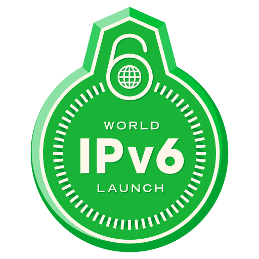

новая версия интернет протокола (IP), призванная решить проблемы, с которыми столкнулась предыдущая версия (IPv4) при её использовании в Интернете, за счёт использования длины адреса 128 бит вместо 32. Протокол был разработан IETF. В настоящее время протокол IPv6 уже используется в нескольких тысячах сетей по всему миру (более 14000 сетей на осень 2013), но пока ещё не получил столь широкого распространения в Интернете, как IPv4. На конец 2012 года доля IPv6 в сетевом трафике составляла около 1 %[1]. К концу 2013 года ожидался рост до 3 %[2]. В России коммерческое использование операторами связи невелико (не более 1 % трафика). DNS-серверы многих российских регистраторов доменов и провайдеров хостинга используют IPv6. После того, как адресное пространство в IPv4 закончится, два стека протоколов — IPv6 и IPv4 — будут использоваться параллельно (англ. dual stack), с постепенным увеличением доли трафика IPv6, по сравнению с IPv4. Такая ситуация станет возможной из-за наличия огромного количества устройств, в том числе устаревших, не поддерживающих IPv6 и требующих специального преобразования для работы с устройствами, использующими только IPv6.
